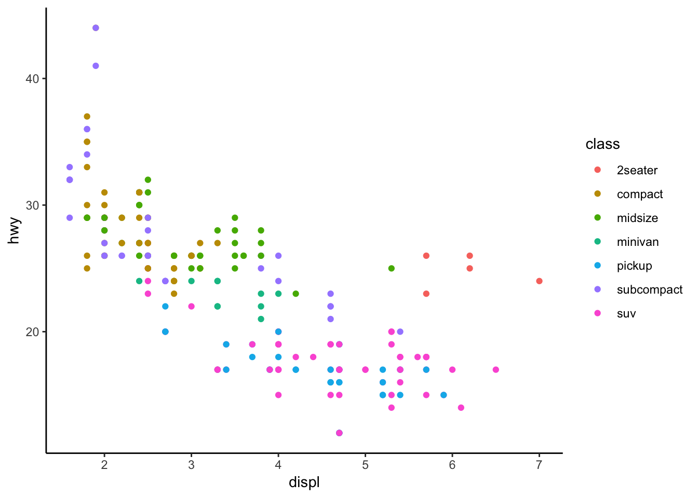

Lesson 2: Reading data, setting working directories, and plotting facets
Functions for Lesson 2
[1] "p_load" "here"
Packages for Lesson 2
[1] "pacman" "here"
Do First problem set
Before each new session, we’ll do a quick recap, called a Do First. These will only use functions we’ve previously covered, so if you’re unsure or can’t remember, just check the code from the previous session.
Recreate the below plot using the smaller NYC Airbnb dataset. There are four aesthetics to change and the plot uses theme_solarized.
Hint: Use the help ? function if something isn’t clear.
# You didn't think we'd make it this easy, did you?

Read in .csv data file
We’ll also be learning how to read in data, so have a go at testing these functions.
# run the help page for the below functions to see what they do
getwd()
setwd()
require(here)
here()
Plotting facets
facet_wrap and facet_grid
Facets add a third variable to a plot.
* The facet function takes a formula as an argument, which is just a data structure, denoted by a tilde ~
facet_wrap
ggplot(data = mpg) + geom_point(mapping = aes(x = displ, y = hwy)) + facet_wrap(~class, nrow = 2) + theme_classic()

facet_grid
ggplot(data = mpg) + geom_point(mapping = aes(x = displ, y = hwy)) + facet_grid(drv ~ cyl) + theme_bw()

Exercise 1
Try plotting facets using the smaller Airbnb data.
* What happens when you use a continuous variable on a facet_wrap?
LS0tClRpdGxlOiAiTGVzc29uIDIiCmhlYWRlci1pbmNsdWRlczogXHVzZXBhY2thZ2V7ZmxvYXR9CmFsd2F5c19hbGxvd19odG1sOiB5ZXMKb3V0cHV0OgogIGh0bWxfZG9jdW1lbnQKcGFyYW1zOgogIGxlc3NvbjogIXIgcGFzdGUwKCJMZXNzb24gIiwyKQogIHRpdGxlOiAiTGVzc29uIDI6IFJlYWRpbmcgZGF0YSwgc2V0dGluZyB3b3JraW5nIGRpcmVjdG9yaWVzLCBhbmQgcGxvdHRpbmcgZmFjZXRzIiAgCi0tLQoKCmBgYHtyLCBzZXR1cCwgZWNobyA9IEZBTFNFLCBjYWNoZSA9IEZBTFNFLCBpbmNsdWRlID0gRkFMU0V9Cm9wdGlvbnMod2lkdGg9MTAwKQprbml0cjo6b3B0c19jaHVuayRzZXQoCiAgZXZhbCA9IEZBTFNFLCAjIHJ1biBhbGwgY29kZQogIGVjaG8gPSBUUlVFLCAjIHNob3cgY29kZSBjaHVua3MgaW4gb3V0cHV0IAogIHRpZHkgPSBUUlVFLCAjIG1ha2Ugb3V0cHV0IGFzIHRpZHkKICBtZXNzYWdlID0gRkFMU0UsICAjIG1hc2sgYWxsIG1lc3NhZ2VzCiAgd2FybmluZyA9IEZBTFNFLCAjIG1hc2sgYWxsIHdhcm5pbmdzIAogIGNvbW1lbnQgPSAiIiwKICB0aWR5Lm9wdHM9bGlzdCh3aWR0aC5jdXRvZmY9MTAwKSwgIyBzZXQgd2lkdGggb2YgY29kZSBjaHVua3MgaW4gb3V0cHV0CiAgc2l6ZT0ic21hbGwiICMgc2V0IGNvZGUgY2h1bmsgc2l6ZQogICkKYGBgClwKCjwhLS0gaW5zdGFsbCBwYWNrYWdlcyAtLT4KYGBge3IsIGxvYWQgcGFja2FnZXMsIGV2YWw9VCwgaW5jbHVkZT1ULCBjYWNoZT1GLCBtZXNzYWdlPUYsIHdhcm5pbmc9RiwgcmVzdWx0cz0naGlkZScsZWNobz1GfQpwYWNrYWdlcyA8LSBjKCJnZ3Bsb3QyIiwiZ2d0aGVtZXMiLCJkcGx5ciIsInRpZHl2ZXJzZSIsInpvbyIsIlJDb2xvckJyZXdlciIsInZpcmlkaXMiLCJwbHlyIikgICAKaWYgKHJlcXVpcmUocGFja2FnZXMpKSB7CiAgICBpbnN0YWxsLnBhY2thZ2VzKHBhY2thZ2VzLGRlcGVuZGVuY2llcyA9IFQpCiAgICByZXF1aXJlKHBhY2thZ2VzKQogICAgIyBsb2FkIHR2dGhlbWVzCiAgICBkZXZ0b29sczo6aW5zdGFsbF9naXRodWIoIlJ5by1ONy90dnRoZW1lcyIpCn0KbGFwcGx5KHBhY2thZ2VzLGxpYnJhcnksY2hhcmFjdGVyLm9ubHk9VCkKYGBgCgo8IS0tIF9fX19fX19fX19fX19fX19fX19fX19fX19fX19fX19fX19fX19fX19fX19fX19fX19fX19fX19fX19fX19fX19fX19fX19fX19fX18gLS0+CjwhLS0gX19fX19fX19fX19fX19fX19fX19fX19fX19fX19fX19fX19fX19fX19fX19fX19fX19fX19fX19fX19fX19fX19fX19fX19fX19fXyAtLT4KPCEtLSBfX19fX19fX19fX19fX19fX19fX19fX19fX19fX19fX19fX19fX19fX19fX19fX19fX19fX19fX19fX19fX19fX19fX19fX19fX19fIC0tPgo8IS0tIHN0YXJ0IGJvZHkgLS0+CgojIGByIHBhcmFtcyR0aXRsZWAgICAgCgpcICAKCkZ1bmN0aW9ucyBmb3IgYHIgcGFyYW1zJGxlc3NvbmAgICAgCmBgYHtyLGV2YWw9VCwgZWNobz1GfQpyZXF1aXJlKHJlYWRyKQpyZWFkTGluZXMoImh0dHBzOi8vcmF3LmdpdGh1YnVzZXJjb250ZW50LmNvbS9kYXJ3aW5hbmRkYXZpcy9FbW9SeUNvZGluZ0NsdWIvbWFzdGVyL2Z1bmN0aW9uc19sZXNzb24yLnR4dCIpCmBgYAoKXCAgCgpQYWNrYWdlcyBmb3IgYHIgcGFyYW1zJGxlc3NvbmAgICAgICAKYGBge3IsZXZhbD1ULCBlY2hvPUZ9CnJlcXVpcmUocmVhZHIpCnJlYWRMaW5lcygiaHR0cHM6Ly9yYXcuZ2l0aHVidXNlcmNvbnRlbnQuY29tL2RhcndpbmFuZGRhdmlzL0Vtb1J5Q29kaW5nQ2x1Yi9tYXN0ZXIvcGFja2FnZXNfbGVzc29uMi50eHQiKQpgYGAKClwgICAgCgojIEFnZW5kYQoKV2UnbGwgYmUgdXNpbmcgW0NoIDMgRGF0YSB2aXN1YWxpc2F0aW9uIGluIGBSYCBmb3IgRGF0YSBTY2llbmNlXShodHRwczovL3I0ZHMuaGFkLmNvLm56L2RhdGEtdmlzdWFsaXNhdGlvbi5odG1sKS4gIApTZWN0aW9uIDMuMS4xLiAgICAgCgoqIERvIGZpcnN0IHByb2JsZW0gc2V0CiogUmVhZCBpbiBkYXRhIGZpbGUgIAoqIFNldCB3b3JraW5nIGRpcmVjdG9yeSBgaGVyZWAgIAoqIEZhY2V0cyAgCgoKXCAgCgojIERvIEZpcnN0IHByb2JsZW0gc2V0ICAKCkJlZm9yZSBlYWNoIG5ldyBzZXNzaW9uLCB3ZSdsbCBkbyBhIHF1aWNrIHJlY2FwLCBjYWxsZWQgYSBEbyBGaXJzdC4gVGhlc2Ugd2lsbCBvbmx5IHVzZSBmdW5jdGlvbnMgd2UndmUgcHJldmlvdXNseSBjb3ZlcmVkLCBzbyBpZiB5b3UncmUgdW5zdXJlIG9yIGNhbid0IHJlbWVtYmVyLCBqdXN0IGNoZWNrIHRoZSBjb2RlIGZyb20gdGhlIHByZXZpb3VzIHNlc3Npb24uICAgIApcICAgIAoKUmVjcmVhdGUgdGhlIGJlbG93IHBsb3QgdXNpbmcgdGhlIHNtYWxsZXIgTllDIEFpcmJuYiBkYXRhc2V0LiBUaGVyZSBhcmUgZm91ciBhZXN0aGV0aWNzIHRvIGNoYW5nZSBhbmQgdGhlIHBsb3QgdXNlcyBgdGhlbWVfc29sYXJpemVkYC4gIApfSGludF86IFVzZSB0aGUgaGVscCBgP2AgZnVuY3Rpb24gaWYgc29tZXRoaW5nIGlzbid0IGNsZWFyLiAgCmBgYHtyLCBlY2hvPVR9CgoKIyBZb3UgZGlkbid0IHRoaW5rIHdlJ2QgbWFrZSBpdCB0aGlzIGVhc3ksIGRpZCB5b3U/CgoKYGBgCgoKYGBge3IsIGVjaG89RiwgZXZhbD1ULCBvdXQud2lkdGg9IjEwMCUifQpyZXF1aXJlKGdncGxvdDIpCnJlcXVpcmUoZHBseXIpCnJlcXVpcmUoZ2d0aGVtZXMpCgojIHNtYWxsZXIgY3N2IGZpbGUgKDE2IGNvbHMpCnVybCA8LSAiaHR0cDovL2RhdGEuaW5zaWRlYWlyYm5iLmNvbS91bml0ZWQtc3RhdGVzL255L25ldy15b3JrLWNpdHkvMjAxOS0wNi0wMi92aXN1YWxpc2F0aW9ucy9saXN0aW5ncy5jc3YiCgpueWMgPC0gIHJlYWRfY3N2KHVybCkKbnljIDwtIG55Y1tueWMkaWQgPCAxMDAwMDAwLF0gIyBnZXQgc21hbGxlciBzdWJldCBvZiBkYXRhCgpnZ3Bsb3QoZGF0YT1ueWMpICsKICBnZW9tX3BvaW50KG1hcHBpbmcgPSBhZXMoeD1taW5pbXVtX25pZ2h0cywgeT1udW1iZXJfb2ZfcmV2aWV3cyksIGNvbG91ciA9ICJvcmFuZ2UiLCBzaGFwZSA9IDE1LCBzaXplID0gMiwgYWxwaGEgPSAwLjQpICsKICB0aGVtZV9zb2xhcml6ZWQoKQpgYGAKXCAgICAKIAojIFJlYWQgaW4gLmNzdiBkYXRhIGZpbGUgIAoKV2UnbGwgYWxzbyBiZSBsZWFybmluZyBob3cgdG8gcmVhZCBpbiBkYXRhLCBzbyBoYXZlIGEgZ28gYXQgdGVzdGluZyB0aGVzZSBmdW5jdGlvbnMuICAKYGBge3IsIGV2YWwgPUZ9CiMgcnVuIHRoZSBoZWxwIHBhZ2UgZm9yIHRoZSBiZWxvdyBmdW5jdGlvbnMgdG8gc2VlIHdoYXQgdGhleSBkbwpnZXR3ZCgpCnNldHdkKCkKCnJlcXVpcmUoaGVyZSkKaGVyZSgpCmBgYAoKIyMgUGxvdHRpbmcgZmFjZXRzICAgIApgZmFjZXRfd3JhcGAgYW5kIGBmYWNldF9ncmlkYCAgCkZhY2V0cyBhZGQgYSB0aGlyZCB2YXJpYWJsZSB0byBhIHBsb3QuICAgCiAgKiBUaGUgZmFjZXQgZnVuY3Rpb24gdGFrZXMgYSBmb3JtdWxhIGFzIGFuIGFyZ3VtZW50LCB3aGljaCBpcyBqdXN0IGEgZGF0YSBzdHJ1Y3R1cmUsIGRlbm90ZWQgYnkgYSB0aWxkZSAqKn4qKiAgCgpgZmFjZXRfd3JhcGAgICAgCmBgYHtyLGV2YWw9VH0KZ2dwbG90KGRhdGEgPSBtcGcpICsgCiAgZ2VvbV9wb2ludChtYXBwaW5nID0gYWVzKHggPSBkaXNwbCwgeSA9IGh3eSkpICsgCiAgZmFjZXRfd3JhcCh+IGNsYXNzLCBucm93ID0gMikgKwogIHRoZW1lX2NsYXNzaWMoKQoKYGBgCgpgZmFjZXRfZ3JpZGAgIApgYGB7ciwgZXZhbD1UfQpnZ3Bsb3QoZGF0YSA9IG1wZykgKyAKICBnZW9tX3BvaW50KG1hcHBpbmcgPSBhZXMoeCA9IGRpc3BsLCB5ID0gaHd5KSkgKyAKICBmYWNldF9ncmlkKGRydiB+IGN5bCkgKwogIHRoZW1lX2J3KCkKYGBgCgoKIyMgRXhlcmNpc2UgMSAgClRyeSBwbG90dGluZyBmYWNldHMgdXNpbmcgdGhlIHNtYWxsZXIgQWlyYm5iIGRhdGEuICAKICogV2hhdCBoYXBwZW5zIHdoZW4geW91IHVzZSBhIGNvbnRpbnVvdXMgdmFyaWFibGUgb24gYSBgZmFjZXRfd3JhcGA/ICAKCgo=